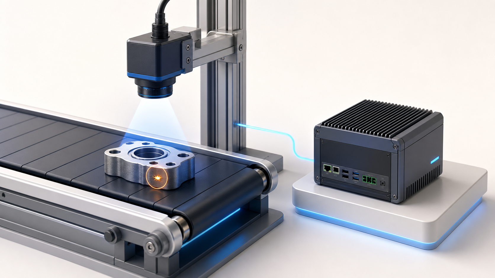
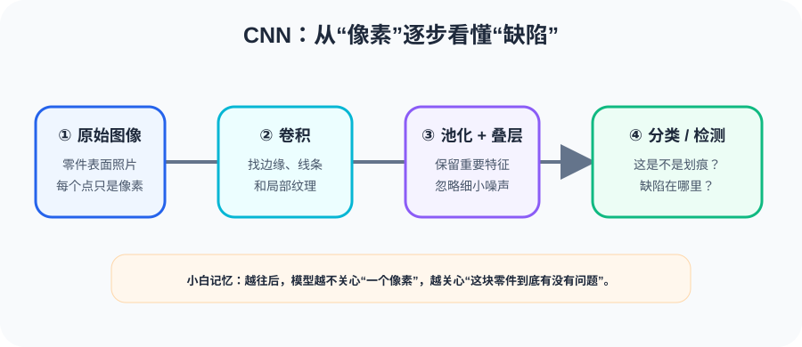
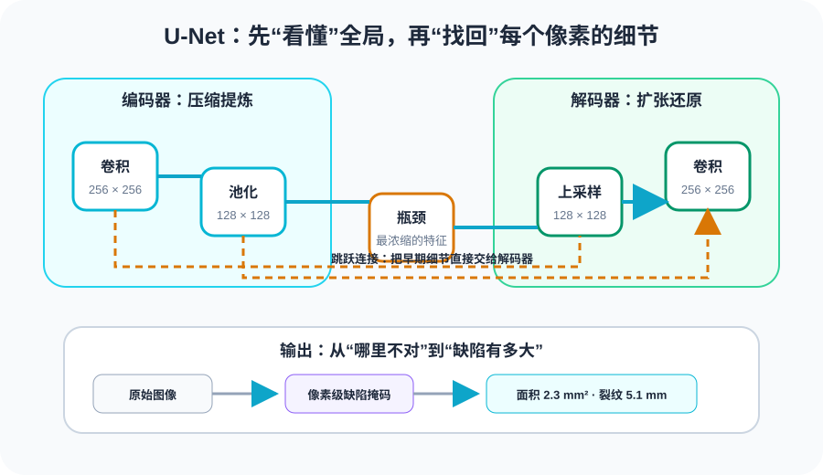
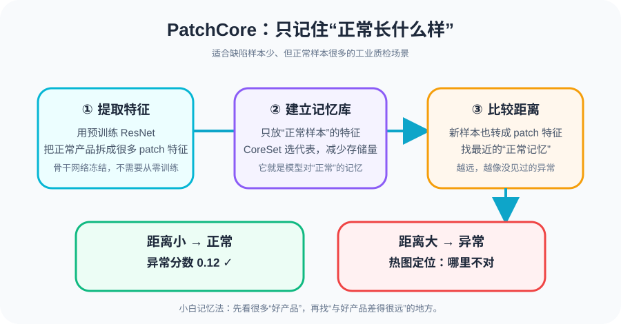

给工厂装上"眼睛"：从CNN到异常检测
如果第一讲是给工厂装上了"大脑"，那这一讲就是给工厂装上"眼睛"。而机器视觉，正是工业AI落地最成熟、最广泛的领域。

想象一个汽车零部件车间的质检工位：工人师傅每天盯着流水线上的零件，寻找裂纹、毛刺、色差……一天8小时，一秒都不能走神。这类工作有三个致命痛点：
这不只是"更好"的问题，而是从量变到质变。AI视觉检测能做到人力做不到的事情：微米级缺陷识别、0.01秒级响应、百万件数据统计——这些组合起来就是一条可控、可追溯、可优化的质量闭环。
工业视觉的核心不是"替代人"，而是解决人力无法做到的三件事：稳定一致的标准、不知疲倦的持续、以及微秒级的实时响应。ROI 计算时，漏检造成的退货损失往往远大于人工成本。
如果说神经网络是工厂的"大脑"，那 CNN（Convolutional Neural Network）就是专门为"看图"设计的视觉皮层。几乎所有工业视觉模型都以CNN为基础。
想象一个质检员拿着一把小放大镜，在产品表面从左到右、从上到下一格一格地滑动。每滑到一个位置，放大镜就把那一小块区域的特征记录下来——是光滑的？有划痕？边缘很锐利？
这就是卷积操作的本质：用一个小的"滤镜"（filter/kernel），在整张图上滑动扫描，提取局部特征。数学上就是滤镜和图像局部区域的逐元素乘法求和。
卷积核 (Kernel/Filter)：一个小小的权重矩阵（如 3×3），相当于那把"放大镜"。不同的卷积核能提取不同特征——有的擅长找边缘，有的擅长找纹理，有的擅长找颜色变化。这些权重是训练时自动学出来的，不需要人工设计。
扫描完一整张图，信息量还是很大。怎么办？池化（Pooling）就像一个"精简员"——在每个小区域里只保留最突出的那个值（最大池化），或者取平均（平均池化）。这样图的尺寸缩小了，但最关键的特征保留了。
用工厂的话说：一箱零件里，你不需要每个都看，只需要知道"这箱有没有明显坏的"。池化就是干这件事的。
最奇妙的是，CNN 会自动形成从低到高的特征层级：

注意一个关键直觉：越浅的层看的东西越小越简单，越深的层看的东西越大越抽象。这和人眼的认知过程惊人地一致——先看到线条，再看到形状，最后认出物体。
工业质检中，浅层特征（边缘、线条）特别重要——划痕、裂纹本质上就是"不该有的边缘"。所以有时候不太深的网络（5~10层）在工业场景就能工作得很好，不一定非要上百层的大模型。
直觉告诉我们：网络越深，能学的东西越多，效果应该越好。但现实狠狠打脸 —— 网络太深反而更难训练，效果反而变差。这就是著名的退化问题（Degradation Problem）。
想象你在公司写一份报告，经过10个审批环节，最终输出可能还接近原意；但如果经过 100 个审批环节，每层都可能"改一点"，最后输出可能面目全非——不是改好了，而是改乱了。
网络也一样：每一层都在做变换，层太多之后，信号从前往后传的时候信息逐渐走样，梯度反向传的时候也越传越弱（梯度消失）。结果就是：56层网络的效果竟然比20层的还差。
退化不是过拟合！过拟合是训练集表现好、测试集差，而退化是训练集本身就没学好。56层网络连训练数据都拟合不好，说明不是"背多了"，而是"学不动了"。
ResNet 的解法极其巧妙：给信号开一条"捷径"（shortcut/skip connection），让它可以跳过中间的层，直接传到后面。
用工厂的话说：报告送审的过程中，保留一份原件直送终点。中间的审批环节只需要在原件基础上添加修改（残差），不用从头重写。万一审批环节添乱了，最终还有原件兜底。
这个设计的精髓在于：网络只需要学习"增量"，不需要从零学习"全集"。如果某一层不需要改变什么，F(x) 就接近 0，输出就是原始输入 x——信息无损传递。如果需要调整，F(x) 就是一个小的修正量，比从头学一个完整映射容易得多。
ResNet 解决了深度网络的训练难题后，网络可以做到 50层、101层、甚至152层，而且越深越强。这带来两个关键优势：
工业项目里，ResNet-18 / ResNet-50 + 迁移学习是最常见的视觉基座方案。ResNet-18 轻量快速适合边缘部署，ResNet-50 精度高适合服务器端。先在 ImageNet 预训练，再用工厂数据微调，几百张标注图就能开工。
前几个模型能判断"这张图有没有缺陷"，但工厂不只要知道有没有，还必须知道在哪里。这就需要目标检测（Object Detection）。
分类只回答一个问题："这是什么？"检测要同时回答两个问题：
用矩形框标记目标位置，通常用 (x, y, w, h) 表示——中心点坐标 + 宽高。模型需要预测出这些值。
早期检测方法是"先找候选区域，再逐个分类"——就像质检员拿着放大镜一块一块找，找到可疑的再仔细看。速度慢，实时不了。
YOLO（You Only Look Once） 的革命性在于：把整张图一次性看完，同时输出所有目标的类别和位置。就像一个经验丰富的质检员，瞟一眼就知道哪里有问题。
具体做法：把图像分成 S×S 的网格，每个网格单元负责预测自己区域内有没有目标、是什么类、边界框在哪。所有网格同时预测，one-shot 输出结果。
YOLO 的最大优势是快。YOLOv8 在工业 GPU 上可以跑到 100+ FPS，即在 10毫秒内完成一张图的检测。这意味着产线上每分钟600个零件经过，每个都能实时检测。
推理速度极快，适合实时产线
端到端训练，部署简单
社区活跃，YOLOv8/v11 持续迭代
极小目标检测能力有限
缺陷样本少时效果打折
定位精度不如两阶段方法
工厂里的 YOLO 用例：
工业检测中，YOLO + ResNet骨干 是黄金组合。YOLOv8 默认用 CSPDarknet 骨干，但可以替换成 ResNet-50。如果检测速度是硬指标，优先选 YOLO；如果精度优先且目标很小，可以考虑两阶段检测器（如 Faster R-CNN）。
CNN 统治了计算机视觉将近十年，直到 Vision Transformer（ViT） 带来了一种全新的看图方式——不用放大镜一格一格扫了，把图切成块，块与块之间互相"看"。
Transformer 本来是处理语言的——把一句话切成一个个词（token），然后让词和词之间做"注意力"计算。ViT 的思路是：图像也可以切成"词"啊！
具体做法：把一张 224×224 的图切成 16×16 的小方块（patch），一共 196 个 patch。每个 patch 像一个"词"，送进 Transformer 里做自注意力计算。
CNN 的卷积核是"局部视野"——每次只看一小块。而 ViT 的自注意力（Self-Attention）让每个 patch 都能和所有其他 patch 计算关联度，实现全局视野。
用工厂类比：CNN 就像质检员用放大镜一格一格看，看完左上角的时候还不知道右下角长什么样；ViT 就像质检员把整张图摊开，一眼就能注意到左上角的裂纹和右下角的色差之间的关联。
全局建模能力强，理解整幅图的语义
大规模数据下效果可超越 CNN
架构统一（视觉和语言用同一套 Transformer）
需要大量数据才能训好（小数据集效果不如 CNN）
计算量大、推理速度比同级别 CNN 慢
对位置编码敏感，工业旋转场景需特殊处理
ViT 最适合需要理解全局上下文的场景：
工业场景数据量通常有限，不建议从零训练 ViT。推荐做法：使用 ImageNet-21K 预训练的 ViT 做特征提取器（backbone），只微调最后几层。如果想兼顾速度和全局建模，Swin Transformer（窗口注意力）是更实用的选择。
分类回答"是什么"，检测回答"在哪里"，而语义分割（Semantic Segmentation）回答一个更精细的问题：每一个像素属于什么？
YOLO 用矩形框圈出缺陷位置，但很多缺陷形状不规则——一条弯弯曲曲的裂纹，一个边界模糊的色差区域，用一个矩形框太粗糙了。
语义分割要做到：给图片里每个像素上色——这个像素是"正常表面"，那个像素是"划痕"，那边的是"凹坑"。最终得到一张和原图同样大小的像素级标签图。
分类：整张图 → "合格/不合格"（一个标签）
检测：整张图 → "缺陷在 (x,y,w,h)，类别=划痕"（矩形框）
分割：整张图 → 每个像素一个标签（像素级轮廓）
U-Net 是医学图像分割领域的里程碑模型，在工业上同样大放异彩。它的核心架构是一个大大的"U"字：
关键在于跳跃连接——它的角色和 ResNet 的捷径类似，但做得更彻底：不只是加法，而是把编码器的特征拼接（concatenate）到解码器上，让解码器既有高层语义，又有低层细节。

U-Net 在工业中最有价值的应用是精确缺陷分割：
工业分割的标注成本远高于检测——每个像素都要标。建议先用检测模型粗定位，再对 ROI 区域用 U-Net 精分割。也可以用半自动标注工具（SAM + 人工修正）大幅降低标注时间。U-Net 与 ResNet 骨干结合（如 ResNet-34 + U-Net 解码器）是目前主流方案。
前面所有模型都有一个前提：你得有缺陷样本。但在真正的工厂里，好产品堆成山，坏产品找不着。这就是工业异常检测的核心难题。
假设你做手机屏幕质检，良品率 99.5%。一天产 10000 块，只有 50 块是坏的。其中裂纹、白点、暗纹……每种缺陷可能就几个样本。
用这些数据训 YOLO？样本太少，模型根本学不动。而且新的缺陷类型随时可能出现——模型从未见过的缺陷，当然检测不出来。
工业缺陷分布是极端长尾：正常样本占 99%+，常见的少数缺陷占剩余大部分，还有大量极其罕见的未知缺陷。传统监督学习天然不擅长处理这种分布。
PatchCore 的思路极其巧妙——既然坏品训不了，那就不训了！只用正常样本构建一个"正常记忆库"（Memory Bank），测试时拿新样本和记忆库比距离——离正常太远的就是异常。
用工厂类比：新手质检员上岗前看了三天好产品，脑子里记住了"正常长什么样"。之后在产线上，看到任何"不对劲"的就标出来——即使他从没见过这种缺陷。

PatchCore 在工业圈迅速走红，很大程度上因为Anomalib 这个开源库——Intel 团队维护，支持 PatchCore、PaDiM、STFPM 等多种异常检测算法，自带训练、评估、部署全流程，几十行代码就能跑起来。
部署方面，PatchCore 的推理过程（特征提取 + 最近邻搜索）非常适合OpenVINO 加速——在 Intel CPU 或核显上就能跑到实时。不需要 GPU，一个工控机就搞定。
| 异常检测方案 | 需要缺陷样本 | 像素级定位 | 训练时长 | 推理速度 |
|---|---|---|---|---|
| PatchCore | 不需要 ✅ | 支持 ✅ | ~5分钟 | 20~50 FPS |
| PaDiM | 不需要 ✅ | 支持 ✅ | ~2分钟 | 30~60 FPS |
| STFPM | 不需要 ✅ | 支持 ✅ | ~30分钟 | 50+ FPS |
| YOLO (监督) | 需要 ❌ | 仅框级 | ~数小时 | 100+ FPS |
PatchCore + Anomalib + OpenVINO 是目前工业异常检测性价比最高的方案组合。典型流程：先用 Anomalib 快速验证效果（半天搞定），确认可行后用 OpenVINO 优化部署到产线工控机。不需要GPU、不需要标注缺陷、不需要深度学习专家——一个熟悉 Python 的工程师就能上线。
七个模型，七种"看"法。最后用一张表把它们串起来——每个模型在工厂里扮演什么角色、解决什么问题、适合什么场景。
| 模型 | 工厂角色 | 回答的问题 | 典型工业场景 |
|---|---|---|---|
| CNN | 基础视觉引擎 | "图里有什么特征？" | 所有视觉任务的底层基座 |
| ResNet | 深度特征提取器 | "特征够不够丰富？" | 迁移学习、预训练骨干网络 |
| YOLO | 实时目标检测器 | "目标在哪？是什么？" | 缺陷定位、安全合规、物料检测 |
| ViT | 全局理解引擎 | "整体场景是怎样的？" | 复杂装配、多物体关系、多模态 |
| U-Net | 像素级分割器 | "每个像素属于什么？" | 缺陷轮廓、涂层分析、尺寸量化 |
| PatchCore | 无标签异常检测器 | "和正常差多远？" | 罕见缺陷、未知缺陷、少样本场景 |
有缺陷标签 + 要定位 → YOLO
有缺陷标签 + 要像素级轮廓 → U-Net
没缺陷标签 / 缺陷极稀少 → PatchCore
需要理解全局关系 → ViT（预训练+微调）
所有方案的骨干 → ResNet（迁移学习）
记住：工业项目不是选"最强模型"，而是选数据条件匹配、部署约束满足、维护成本可控的方案。